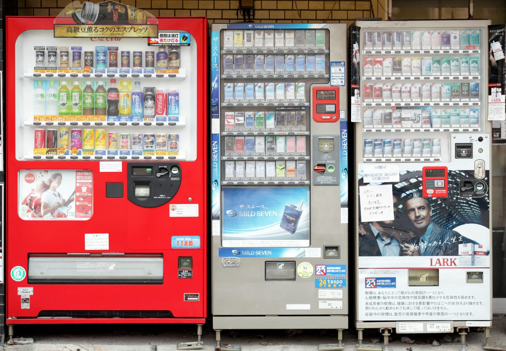

Revolutionary Weed Vending Machine with Live Labeling Launches in Colorado

The Future of Cannabis Dispensaries is Here
The cannabis industry has seen rapid evolution, and now, a groundbreaking weed vending machine with live labeling capabilities has arrived in Colorado. This next-generation vending solution aims to revolutionize the way consumers purchase cannabis products, elevating the retail experience to new heights.
Advanced Weed Vending Machine Features
The cutting-edge weed vending machine boasts a plethora of innovative features designed to enhance the customer experience:
Live Labeling System
This state-of-the-art system prints custom labels for each bag, ensuring consumers receive accurate and up-to-date information about the product they're purchasing.
Touchscreen Interface
The user-friendly touchscreen enables seamless navigation through an extensive catalog of cannabis products, streamlining the selection process.
ID Verification
To ensure compliance with age restrictions, the machine is equipped with an advanced ID verification system that scans and verifies customers' identification documents.
Payment Options
The weed vending machine accepts multiple payment methods, including cash, credit cards, and mobile wallets, making transactions quick and convenient.
Security Measures
Robust security features, such as tamper-proof casing and continuous video surveillance, ensure the integrity of the machine and its contents.
Expansive Product Selection
The weed vending machine provides an impressive range of cannabis products, including:
- Flower strains: Indica, Sativa, and Hybrid varieties
- Pre-rolled joints
- Edibles: Gummies, chocolates, and baked goods
- Concentrates: Shatter, wax, and live resin
- Tinctures and topicals
- Accessories: Grinders, rolling papers, and vaporizers
Customers can filter products based on their preferences, such as THC or CBD content, flavor profiles, and desired effects, allowing them to find the perfect product to suit their needs.
Enhancing the Retail Experience
This pioneering weed vending machine offers several benefits for consumers and retailers alike:
Convenience
Customers can quickly and easily purchase cannabis products without waiting in long queues or engaging with budtenders.
Privacy
The vending machine allows for discreet transactions, ensuring customers' privacy and comfort.
Efficiency
Retailers can serve a larger volume of customers while reducing the need for additional staff, resulting in cost savings and increased revenue.
Consistency
The live labeling system guarantees accurate product information, promoting transparency and trust between consumers and retailers.
Future Prospects and Expansion
The introduction of this weed vending machine marks the beginning of a new era in the cannabis industry. As technology continues to advance, we can expect to see further innovations that improve the retail experience and enhance the accessibility of cannabis products.
As this pioneering vending solution gains traction, we anticipate an increase in the number of machines deployed throughout Colorado and other legalized states. In the future, these advanced vending machines could become a staple in cannabis dispensaries, elevating the industry and setting a new standard for customer service.
In conclusion, the revolutionary weed vending machine with live labeling capabilities has the potential to transform the cannabis retail experience. Offering unparalleled convenience, privacy, and